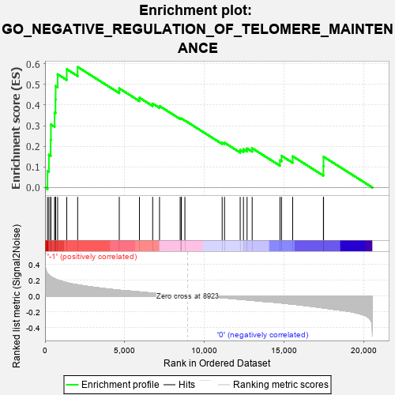
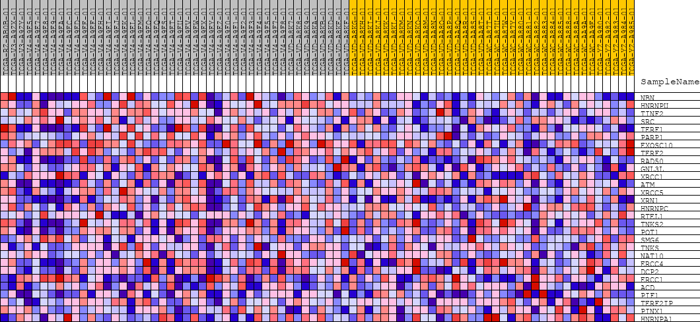
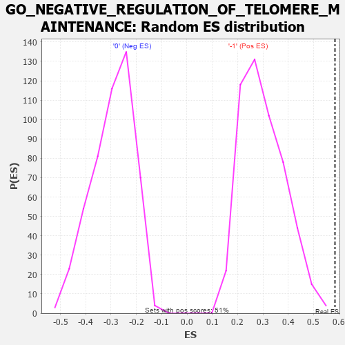

| | | Dataset | GSEAExpression.phenotype_uvm.cls#-1_versus_0 |
| Phenotype | phenotype_uvm.cls#-1_versus_0 |
| Upregulated in class | -1 |
| GeneSet | GO_NEGATIVE_REGULATION_OF_TELOMERE_MAINTENANCE |
| Enrichment Score (ES) | 0.58473784 |
| Normalized Enrichment Score (NES) | 1.9420127 |
| Nominal p-value | 0.0 |
| FDR q-value | 0.11781075 |
| FWER p-Value | 0.41 |
Table: GSEA Results Summary

Fig 1: Enrichment plot: GO_NEGATIVE_REGULATION_OF_TELOMERE_MAINTENANCE
Profile of the Running ES Score & Positions of GeneSet Members on the Rank Ordered List
| PROBE | DESCRIPTION
(from dataset) | GENE SYMBOL | GENE_TITLE | RANK IN GENE LIST | RANK METRIC SCORE | RUNNING ES | CORE ENRICHMENT | | 1 | NBN | na | | | 154 | 0.284 | 0.0805 | Yes |
| 2 | HNRNPU | na | | | 243 | 0.267 | 0.1588 | Yes |
| 3 | TINF2 | na | | | 354 | 0.248 | 0.2303 | Yes |
| 4 | SRC | na | | | 370 | 0.245 | 0.3056 | Yes |
| 5 | TERF1 | na | | | 599 | 0.220 | 0.3625 | Yes |
| 6 | PARP1 | na | | | 656 | 0.215 | 0.4263 | Yes |
| 7 | EXOSC10 | na | | | 666 | 0.214 | 0.4920 | Yes |
| 8 | TERF2 | na | | | 790 | 0.204 | 0.5492 | Yes |
| 9 | RAD50 | na | | | 1363 | 0.170 | 0.5738 | Yes |
| 10 | GNL3L | na | | | 2045 | 0.143 | 0.5847 | Yes |
| 11 | XRCC1 | na | | | 4654 | 0.075 | 0.4807 | No |
| 12 | ATM | na | | | 5919 | 0.053 | 0.4355 | No |
| 13 | XRCC5 | na | | | 6748 | 0.038 | 0.4068 | No |
| 14 | XRN1 | na | | | 7178 | 0.030 | 0.3952 | No |
| 15 | HNRNPC | na | | | 8472 | 0.008 | 0.3345 | No |
| 16 | RTEL1 | na | | | 8541 | 0.006 | 0.3331 | No |
| 17 | TNKS2 | na | | | 8550 | 0.006 | 0.3347 | No |
| 18 | POT1 | na | | | 8769 | 0.003 | 0.3249 | No |
| 19 | SMG6 | na | | | 11104 | -0.020 | 0.2172 | No |
| 20 | TNKS | na | | | 11253 | -0.023 | 0.2171 | No |
| 21 | NAT10 | na | | | 12235 | -0.041 | 0.1818 | No |
| 22 | ERCC4 | na | | | 12439 | -0.044 | 0.1855 | No |
| 23 | DCP2 | na | | | 12666 | -0.048 | 0.1893 | No |
| 24 | ERCC1 | na | | | 12986 | -0.054 | 0.1903 | No |
| 25 | ACD | na | | | 14727 | -0.085 | 0.1317 | No |
| 26 | PIF1 | na | | | 14825 | -0.087 | 0.1539 | No |
| 27 | TERF2IP | na | | | 15526 | -0.102 | 0.1513 | No |
| 28 | PINX1 | na | | | 17452 | -0.149 | 0.1034 | No |
| 29 | HNRNPA1 | na | | | 17461 | -0.149 | 0.1492 | No |
Table: GSEA details [plain text format]

Fig 2: GO_NEGATIVE_REGULATION_OF_TELOMERE_MAINTENANCE
Blue-Pink O' Gram in the Space of the Analyzed GeneSet

Fig 3: GO_NEGATIVE_REGULATION_OF_TELOMERE_MAINTENANCE: Random ES distribution
Gene set null distribution of ES for GO_NEGATIVE_REGULATION_OF_TELOMERE_MAINTENANCE